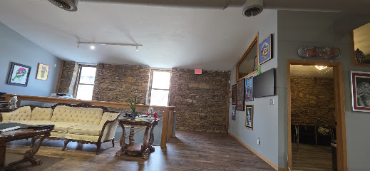

4.9 rating on Google · Lawrence, KS
Blackwork and cover-ups in a Lawrence brick loft.
One-on-one custom tattoo work in Lawrence, run by Jake Rieb. Walk-ins welcome Tuesday through Saturday.
Custom work, not flash off the wall.
Jake Rieb has been tattooing since 2015, starting as an apprentice in Topeka before opening Black Chapel in downtown Lawrence in 2023. He took full ownership of the studio in 2024 and still does the custom work himself: mostly black and grey neo-traditional pieces and cover-ups, built around the story behind each tattoo instead of picking off a flash sheet.
Regulars mention the same two things most often: the cover-up work, and a studio that feels unhurried rather than rushed through on a Saturday schedule.
A converted loft on 9th Street.

The studio sits in a converted brick building at 10 E 9th St, upstairs from the street. Old brick, a worn-in couch for waiting, and two stations set up for walk-ins.
Visit the studio.
Checking hours…
| Monday | Closed |
|---|---|
| Tuesday | 12:00 - 6:00 PM |
| Wednesday | 12:00 - 6:00 PM |
| Thursday | 12:00 - 6:00 PM |
| Friday | 12:00 - 6:00 PM |
| Saturday | 12:00 - 6:00 PM |
| Sunday | Closed |